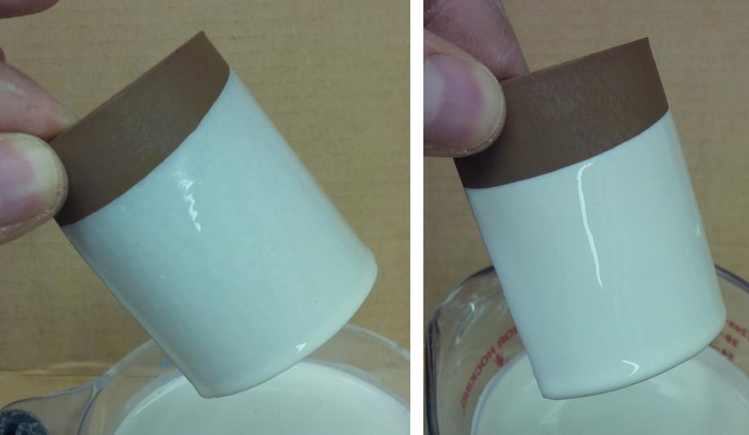

Uneven Glaze Coverage
The secret to getting event glaze coverage lies in understanding how to make thixotropy, specific gravity and viscosity work for you
Details
In industry alot of effort is put forth to create glaze slurries that cover ware evenly and dry quickly. Glaze recipes contain adequate clay to suspend the slurry; their thixotropy, viscosity and specific gravity are tuned to produce an easy-to-use product. Manufacturers also use a variety of binders, hardeners, de-foamers, suspenders to find tune the slurry. Engineers in these companies have equipment to measure these properties and they can tell you absolute values in units like centipoises and thixotropic index. Potters tend to think more about the fired appearance of the glaze and they are much more willing to endure less-than-ideal slurry properties in their glazes. While industry uses frits and kaolin, potters use a host of raw materials that, while contributing to the fired character they want, are hostile to the application properties of the slurry. There is considerable ignorance of the products and techniques used to control slurry properties. I used to tell people to measure glaze slurry properties (e.g. viscosity, specific gravity, thixotropy) when a glaze is working well and use these as a benchmark to diagnose the cause when there is trouble. But many have never actually seen a glaze that really suspends well, applies evenly, does not drip, dries quickly, hardens well and does not dust. So matter how well you think your glaze is working, read on. Of course, none of us have lab test equipment to measure these properties, but for our application we do not need it. By thinking in comparative rather than absolute terms we can accomplish a lot.
Some aspects to getting even application:
- Glaze recipe: Use a glaze base that has adequate clay to suspend the slurry, but not so much that the glaze shrinks excessively during drying. Clay also hardens the glaze when it dries. It is typical to see 15-20% kaolin in fritted glazes. A similar amount of ball clay can be used. Clays source a key oxide that the fired glass needs: Al2O3. Thus there is no reason for inadequate clay in a recipe (unless the glaze is special purpose like crystalline). However feldspar also sources a lot of Al2O3 so it is not surprising that high feldspar glazes are often lacking in clay content. Using a little chemistry it is almost always possible to reduce feldspar and increase other materials in the recipe such that overall chemistry does not change, but the materials sourcing the Al2O3 do.
- Density of bisque: Typical bisque firing is done at cone 06 (1800F). However this is not a rule. Many companies green glaze, thus doing no bisque at all. Others bisque to vitrify (e.g. Cone 10) and then glaze ware and fire at low temperatures. Often what seems practical conflicts was what needs to be done to get even glaze coverage. If bisque is too porous, it can be all to easy to get the glaze on too thick (since by nature thickness is determined by how fast the bisque absorbs the water during dipping or pouring). If bisque is too dense you will have the opposite problem, the glaze layer will be too thin (especially if ware is already damp from a previous glaze dip or pour). However if the thixotropy of the glaze slurry has been optimized the density of the bisque will not be that much of an issue because a quick dip will produce an even layer regardless of the density of the ware. When you realize this you will be able to fire bisque hotter and still get good coverage (generally, the hotter the bisque the better since this will enable purging more of the gases of decomposition and decarbonization that cause glaze faults).
- Specific Gravity: Below we will talk about the importance of the viscosity and thixotropy of the slurry. But before even considering these things you must address the density or specific gravity. While it seems logical that one should simply tune the amount of water in a glaze to get the desired viscosity, this is not the best. The same viscosity can be achieved using different viscosities, but what is the difference? We will see in a moment. A variety of factors contribute to the amount of water it will take to achieve a desired viscosity, these change with material batches and brands and water electrolyte content. It is very possible that a glaze having what appears to be the right water content will go on too thickly, apply unevenly and settle and even hard-pan in the bucket. Assuming that a glaze has sufficient clay, why would this happen? The specific gravity is too high. It is too heavy. Unless you are doing some unusual type of glazing or your glaze needs to be low in clay content (e.g. Crystalline ware) a specific gravity around 1.45 to 1.5 should be about right. It is actually better to err on the low side if you want to get the best coverage. But, you might say, that will make the slurry to thin. Notwithstanding that, it is also very possible that troublesome glaze you are using now has a specific gravity of 1.6 or more and have about the viscosity you think is right. Imagine adding enough water to take it down to 1.45, that will will make it so runny as to make it impossible to use. Right? Bear with me, we will take care of this in a minute. The real point here is that the specific gravity is the bench mark. If anyone is having trouble with even coverage and they need advice I feel unqualified to give it without knowing the specific gravity. And I feel it should be around 1.45 for the average raw or partially fritted glaze.
- Viscosity: Glaze viscosity is most easily measured using a Ford cup (from a paint store). Maybe a simpler way is just to stir it in the bucket, pull out the stick and see how long it keeps going. Traditionally I have liked to see it go for three or four seconds (or less for slip ware or dense bisque). It seems obvious that this property is very important to achieving even coverage on ware. But in actual fact, it is not as important as you might think. I will explain in the next section.
- Thixotrophy of slurry: Thixotropy refers to the dynamic nature a slurry can have, being more fluid when in motion and gelled when not. By adding a small amount of vinegar or Epsom salts to a glaze slurry we can do two things: Increase the viscosity and the thixotropy. If the specific gravity starting point is low enough the amount of acid needed to thicken it to the right viscosity will also produce the right thixotropy. But if we start with too high of a specific gravity it will gel too much when motion stops and apply too thickly. For me, the magic point is around 1.45 specific gravity. When the slurry is right you can dip a piece, extract it right away leaving an even layer of gelled glaze cover the right thickness and no dripping. What is a good indicator to it being right? Stir it well, pull the stick out and watch it. It should go round for 2-3 seconds, then stop and bounce back slightly. That bounce back is the thixotropy. Getting that immediate bounce-back is harder with slurries of higher specific gravity. There is another important implication with this perfectly gelled slurry we create: Dipping time is always the same (assuming ware is dry); immerse it and remove it in less than a second on any clay, porous or dense, bisqued or green, and the thickness will be right! What I have just said may be hard to believe if you have always worked with non-gelled glazes. Every time I demonstrate this jaws drop, people cannot believe it! But think about the products we use every day like mayonnaise, toothpaste, paints, ketchup, hair gel, etc., they are also thixotropic non-Newtonian fluids.
- Glazing technique: Of course many factors relating to technique can affect how evenly a glaze application is. Even a gelled glaze will not go on as thickly if the ware is wet or damp from a previous dip. Ware should be clean and free of soluble salts. Super thin ware may need to be heated to accelerate drying if dipping to glaze it inside and out. Consider glazing it inside first, letting that dry, then doing the outside.
- Once-fire ware: Once you discover the secret of gelling glazes it will not be long before you are thinking about the option of green glazing (glazing dry ware without bisquing it). You may be surprised how well glazes adhere to dry clay. But caution is needed. It is much more important not to water-log the piece or bubbling will occur. Using a higher specific gravity, if possible, might be needed. Glaze ware on the inside first, let that dry, then do the outside. In addition, experiment to learn where your glaze melts and adjust your firing schedule to soak the kiln before it melts.
Related Information
Achieve more even glaze coverage on pieces of varying wall thickness

This picture has its own page with more detail, click here to see it.
This is an example of the importance of allowing a bisque piece to dry after glaze the inside surface before glazing the outside face. This hand-built caserole lid is thin and was glazed on the inside first. That wetted the bisque enough that when the outside was poured there was not enough absorbency remaining to build a sufficient thickness on the darker-colored areas of thinner cross section. The problem is exacerbated by the fact that the underlying red body is darkening the color of the thinner glazed sections.
The same engobe. Same water content. What is the difference?

This picture has its own page with more detail, click here to see it.
The engobe on the left, even though it has a fairly low water content, is running off the leather hard clay, dripping and drying slowly. The one on the right has been flocculated with epsom salts (powdered), giving it thixotropy (ability to gel when not in motion but flow when in motion). Now there are no drips, there are no thin or thick sections. It gels after a few seconds and can be uprighted and set on the shelf for drying.
How stop dripping and running:
Add water! Then make it thixotropic.

This picture has its own page with more detail, click here to see it.
The white slip on the left, L3685Z2, (applied to a leather hard cup) is dripping downward from the rim (even though it was held upside down for a couple of minutes!). Yet that slurry was very viscous with a 1.48 specific gravity. Why? Because it was not thixotropic. The fix? I watered it down to 1.46 (making it runny) and added pinches of powdered Epsom salts (while mixing vigorously) until it thickened enough to stop motion in about 1-2 seconds on mixer shut-off. But that stop-motion is followed by a bounce-back. That is the thixotropy. It is easy to overdo the Epsom salts (gelling it too much), I add a drop or two of Darvan to rethin it if needed. When the engobe is right, it gels after about 10 seconds of sitting, so I can stir it, dip and extract the mug, shake to drain it and then it gels and holds in place. Keep in mind, this is a pottery project. In industry, they deflocculate engobes to reduce water content and then impose thixotropy, but that is more technical than the average potter would want.
Links
| Glossary |
Specific gravity
In ceramics, the specific gravity of slurries tells us their water-to-solids ratio. That ratio is a key indicator of performance and enabler of consistency. |
| Glossary |
Viscosity
In ceramic slurries (especially casting slips, but also glazes) the degree of fluidity of the suspension is important to its performance. |
| Glossary |
Thixotropy
Thixotropy is a property of ceramic slurries of high water content. Thixotropic suspensions flow when moving but gel after sitting (for a few moments more depending on application). This phenomenon is helpful in getting even, drip-free glaze coverage. |
| Glossary |
Ceramic Glaze Defects
Ceramic glaze defects include things like pinholes, blisters, crazing, shivering, leaching, crawling, cutlery marking, clouding and color problems. |
 PayPal | No tracking, No ads, No paywall, No transient content! Just organized, concise information constantly updated and improved. Was this helpful? Consider supporting me. |
| By Tony Hansen Follow me on        |  |
Got a Question?
Buy me a coffee and we can talk 

https://digitalfire.com, All Rights Reserved
Privacy Policy